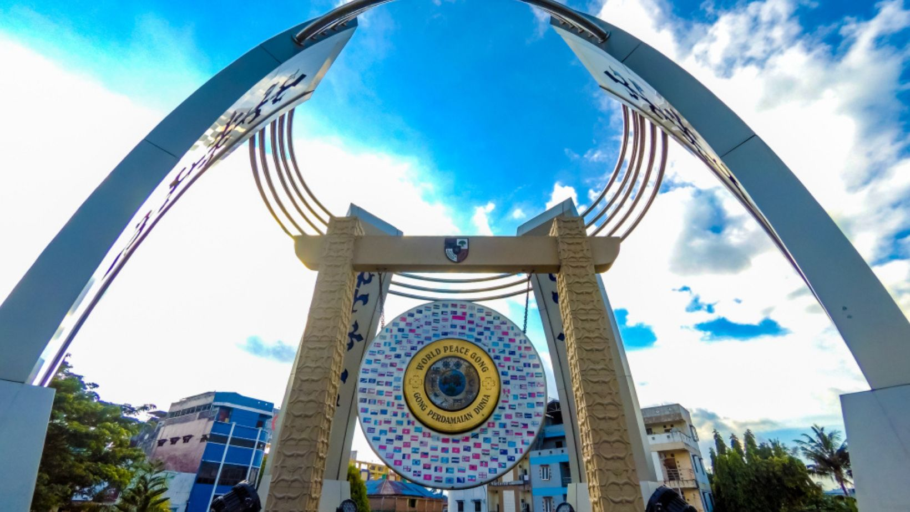

(Gong Perdamaian)
Didirikan setelah Ambon pulih dari konflik pada awal tahun 2000-an, Gong Perdamaian Dunia adalah monumen yang didirikan oleh Yayasan Perdamaian Dunia. Tujuannya adalah untuk mengingatkan masyarakat akan pentingnya persatuan dan kerukunan, sesuai dengan semboyan Ambon Manise.